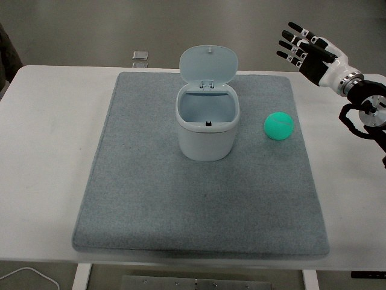

RoboMIND · tienkung_gello_1rgb__pick_up_tennis_ball_and_place_it_in_box/1212_105714
Pick up tennis ball and place it in box

Visual review action_review.json
{
"prompt_protocol": "humanoid_action_v1",
"prompt_protocol_note": "humanoid_action_v1 is applied by analogy to a non-Humanoid-Everyday/GR1 humanoid (Tien Kung with dexterous hands); the overhead view does not show the body, so the arm is described by where it enters the image.",
"prompt_provenance": "visually_authored_from_video_and_initial_frame",
"dataset": "x-humanoid-robomind/RoboMIND",
"task": "pick_up_tennis_ball_and_place_it_in_box",
"episode_id": "1212_105714",
"source_video": "../../original/data/trajectory.hdf5",
"generation_camera": "camera_top",
"source_frame_count": 719,
"source_resolution": [
640,
480
],
"source_fps": null,
"source_fps_note": "FPS is not recorded in the source HDF5; 30 FPS is only a nominal playback rate, so no real-time durations are claimed.",
"selected_source_frame_start": 0,
"selected_source_frame_end_exclusive": 719,
"selected_frame_count": 719,
"selection_reason": "The episode is one continuous single task (pick up the ball, carry it, drop it in the bin, withdraw) with ordinary phases; the complete sequence is retained, so no shortened clip or separate full-sequence prompt was made.",
"usable_prompt": "The humanoid's dexterous hand, on the arm entering from the right edge of the image, reaches down to the green tennis ball, curls its fingers around it and lifts it off the mat. The arm carries the ball leftward over the open-lidded white bin, holds it above the opening, then opens its fingers so the ball drops inside the bin, and withdraws toward the right edge. Keep the camera fixed; preserve robot geometry, physically valid joint motion, and normal gripper opening and closing.",
"full_sequence_prompt": "The humanoid's dexterous hand, on the arm entering from the right edge of the image, reaches down to the green tennis ball, curls its fingers around it and lifts it off the mat. The arm carries the ball leftward over the open-lidded white bin, holds it above the opening, then opens its fingers so the ball drops inside the bin, and withdraws toward the right edge. Keep the camera fixed; preserve robot geometry, physically valid joint motion, and normal gripper opening and closing.",
"selected_action_outcome": {
"status": "visually_completed",
"description": "The right-edge hand grasps the green tennis ball with curled fingers, lifts and carries it leftward to the open-lidded white bin, holds it above the opening for a long stretch (about frames 330-556), then opens and the ball drops inside; green ball visible at the bottom of the bin from about frame 570 through 718. The arm then withdraws up and right to near its starting pose with the fingers open."
},
"source_overall_outcome": {
"status": "visually_completed",
"source_quality_label": "success (archive path is success_episodes/train; no per-frame label)",
"description": "Same as the selected action: ball ends inside the bin and the hand returns near its start pose by frame 718."
},
"anatomical_side_evidence": {
"visible_description": "Only one arm/hand is visible, entering from the right edge of the overhead image; white forearm with black dexterous five-finger hand and black wrist/cable housing at the image edge. The body, head and the other arm are never visible.",
"telemetry": "In puppet/joint_position and master/joint_position, columns 0-7 are essentially constant over all 719 frames while columns 8-15 move (column 15 drops from about 0.92 to about 0.51 at about frames 200-260 as the fingers close on the ball and returns to about 0.91 by frame 560 as they release). This suggests the moving block is the second 8-dim arm block, plausibly the robot's right arm if the ordering is [left, right], but the ordering is not documented in the source.",
"source_annotation": "Publisher instruction: 'Pick up the tennis ball and place it in the box.'",
"visual_certainty": "Robot-relative left/right not reliably established from the overhead view; the prompt therefore describes the arm by where it enters the image (right edge) and does not name left or right anatomy."
},
"arm_roles": {
"active_visible_arm": "The single visible arm (enters from the right image edge) reaches the ball, grasps it with curled dexterous fingers, lifts and carries it to the bin, opens its fingers to release it, and withdraws.",
"other_arm": "Not visible; its telemetry block (columns 0-7) is constant, so it does not act."
},
"coordination": "Single arm acts alone; no hand-to-hand transfer, second hand or human interaction.",
"chronology": [
{
"source_frames_inclusive": [
0,
100
],
"observation": "Hand hovers open at the upper right of the mat with fingers pointing up-left, only slight drift; green ball on the mat right of the bin, white bin with open lid at upper center."
},
{
"source_frames_inclusive": [
102,
142
],
"observation": "Arm extends leftward and lowers the hand toward the ball; hand becomes roughly horizontal above the mat."
},
{
"source_frames_inclusive": [
144,
198
],
"observation": "Fingertip(s) touch the top/right of the ball, hand pushes down and adjusts around the ball (frames 150, 200 at native resolution); ball does not roll away."
},
{
"source_frames_inclusive": [
200,
262
],
"observation": "Fingers curl around the ball (hand-close telemetry falls from about 0.92 to about 0.51 over this span) and the ball is held against the palm/finger pads."
},
{
"source_frames_inclusive": [
264,
330
],
"observation": "Arm lifts and carries the held ball up in the image and leftward toward the bin; ball is clearly off the mat by about frame 300 (native frame 300)."
},
{
"source_frames_inclusive": [
332,
554
],
"observation": "Hand holds the ball over/just inside the opening of the bin with the lid open behind it; only minor adjustments, ball remains gripped."
},
{
"source_frames_inclusive": [
556,
568
],
"observation": "Fingers open and the ball drops into the bin (frames 560, 566 at native resolution; ball sinking below the rim by 566-570)."
},
{
"source_frames_inclusive": [
570,
600
],
"observation": "Open hand stays over the bin; green ball visible at the bottom of the bin."
},
{
"source_frames_inclusive": [
602,
718
],
"observation": "Arm withdraws up and rightward out of the bin and back to near its starting pose at the right edge with fingers open; ball remains in the bin, lid open."
}
],
"uncertainties": [
"Robot-relative left/right of the active arm is not established from the overhead view; telemetry block ordering is undocumented.",
"The exact finger contacts on the ball (which fingers pinch vs support) are not resolvable at 640x480; described neutrally as curling the fingers around the ball.",
"Frames 332-554 show a long hold over the bin; whether the ball touches the rim or lid is not clearly visible, and the prompt states only that it is held above the opening.",
"The ball is partly occluded by the hand during the carry; the lift off the mat is judged from the ball moving up/left in the image while hand motion continues.",
"FPS is not recorded; frame indices are authoritative, not time.",
"Telemetry polarity of the hand column (high=open) is inferred from video and used only as supporting evidence."
],
"source_annotation_discrepancies": [
"None found: the publisher instruction 'Pick up the tennis ball and place it in the box' matches the video; the 'tennis ball' is a green ball and the 'box' is a small white lidded bin with the lid open."
],
"inspection_coverage": {
"entire_sequence_reviewed": true,
"sampled_decoded_frame_indices": [
0,
2,
4,
6,
8,
10,
12,
14,
16,
18,
20,
22,
24,
26,
28,
30,
32,
34,
36,
38,
40,
42,
44,
46,
48,
50,
52,
54,
56,
58,
60,
62,
64,
66,
68,
70,
72,
74,
76,
78,
80,
82,
84,
86,
88,
90,
92,
94,
96,
98,
100,
102,
104,
106,
108,
110,
112,
114,
116,
118,
120,
122,
124,
126,
128,
130,
132,
134,
136,
138,
140,
142,
144,
146,
148,
150,
152,
154,
156,
158,
160,
162,
164,
166,
168,
170,
172,
174,
176,
178,
180,
182,
184,
186,
188,
190,
192,
194,
196,
198,
200,
202,
204,
206,
208,
210,
212,
214,
216,
218,
220,
222,
224,
226,
228,
230,
232,
234,
236,
238,
240,
242,
244,
246,
248,
250,
252,
254,
256,
258,
260,
262,
264,
266,
268,
270,
272,
274,
276,
278,
280,
282,
284,
286,
288,
290,
292,
294,
296,
298,
300,
302,
304,
306,
308,
310,
312,
314,
316,
318,
320,
322,
324,
326,
328,
330,
332,
334,
336,
338,
340,
342,
344,
346,
348,
350,
352,
354,
356,
358,
360,
362,
364,
366,
368,
370,
372,
374,
376,
378,
380,
382,
384,
386,
388,
390,
392,
394,
396,
398,
400,
402,
404,
406,
408,
410,
412,
414,
416,
418,
420,
422,
424,
426,
428,
430,
432,
434,
436,
438,
440,
442,
444,
446,
448,
450,
452,
454,
456,
458,
460,
462,
464,
466,
468,
470,
472,
474,
476,
478,
480,
482,
484,
486,
488,
490,
492,
494,
496,
498,
500,
502,
504,
506,
508,
510,
512,
514,
516,
518,
520,
522,
524,
526,
528,
530,
532,
534,
536,
538,
540,
542,
544,
546,
548,
550,
552,
554,
556,
558,
560,
562,
564,
566,
568,
570,
572,
574,
576,
578,
580,
582,
584,
586,
588,
590,
592,
594,
596,
598,
600,
602,
604,
606,
608,
610,
612,
614,
616,
618,
620,
622,
624,
626,
628,
630,
632,
634,
636,
638,
640,
642,
644,
646,
648,
650,
652,
654,
656,
658,
660,
662,
664,
666,
668,
670,
672,
674,
676,
678,
680,
682,
684,
686,
688,
690,
692,
694,
696,
698,
700,
702,
704,
706,
708,
710,
712,
714,
716,
718
],
"sampling_method": "Every second decoded frame of camera_top (0-718) in sequential 4x3 temporary contact sheets covering the complete 719-frame source, plus native-resolution frames at the transitions.",
"native_resolution_frame_indices": [
0,
150,
200,
262,
300,
560,
566
],
"conditioning_png_inspected_after_sequence": true,
"conditioning_png": "../first_frame.png",
"temporary_evidence_location": "/tmp/rm_review_tienkung_gello_1rgb__pick_up_tennis_ball_and_place_it_in_box_1212_105714 (not a dataset artifact)",
"ancillary_camera_videos_used": false,
"telemetry_used": "puppet and master joint_position (16-dim) per-column variation and a few frame values, as supporting evidence only."
},
"generation_reference_validation": {
"source_frame_start": 0,
"source_frame_end_exclusive": 719,
"frame_count": 719,
"lossless_source_frame_correspondence_passed": true,
"original_source_hdf5_retained_unchanged": true
}
}